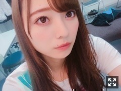
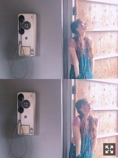

難しい壁
みなさまこんにちは！！
乃木坂46の
梅澤美波です！！

選抜発表がありました！
２２枚目シングル
一列目の右端、
番号で言うと１番の位置です。
２１枚目期間から、
新しく色々させて頂くことが多くなり
不安や葛藤が常に心にはあって
行き場のない感情が芽生えたりもして
活動していく中で
自分とめちゃくちゃに向き合って
嫌いな部分を全部見つめ直して
自分が嫌になったりもして。
でも、それでも、
ここで頑張っていたいと思うのは
私を見ててくれる味方がいるからです！
初期の私のポジションからここまで一緒にきてくれたのはファンの皆様だから(；；)！
言葉にできない感情、
時間が経った今思うこと、色々ありますが
悔しい気持ちをぶつける場所は
今後の活動全てにあると思うし
頑張って結果として皆様にお見せするしかないなと思っています！
私は誰かと同じ道を辿っても
何も見つからないし同じ道は辿れない！
それは一番に私が分かっています、
私は誰かにはなれないから！！
私は私の道を見つけていきたいです！
名前を呼ばれた時、
体が、手が、足が、
信じられないくらい震えたんです！
それが私の気持ちの全てを
物語っていたと思います！
でも、強くいます！！∠( ˙-˙ )／
自信なんてこれっぽっちもなくて
コンプレックスだって
挙げれば考えればキリがないけど、
こんな私にも、"ありがとう"って
言ってくれる人が沢山いるんです
笑顔で言葉をかけてくれる
皆さんの顔が浮かんでくるんです！
その人たちの笑顔が見れれば
それ以上の幸せはないかと。∠( ˙-˙ )／
それに
私だって夢を見たい！
私だって、喜びたい！
ファンの皆様、家族、友達、
お世話になってきた大好きな人達と喜びたい！
やったー！って、思いたい！
だから一人でも多くの方に認めて頂けるよう
梅澤美波、頑張ります！

色んな声全てを受け止め、
今しかないこの瞬間を
大切に大切に頭に刻んで日々頑張ります
味方が一人でもいるのなら
私はそれでいいです
いつも本当にありがとう！！
空扉聴くと元気になるんだ〜！！
ずっと大好き
それは変わらない！！
いつも私たちに
色んな選択肢をくれる！
見守ってくれる寄り添ってくれる！
まだ時間はある！
毎日大事にする！
気持ちを言葉にしたら
きっと止まらなくなるから
まだ言わない、
とにかく軍団長が、若月さんが大好き！
それでは本日はここまで！
長くなりましたが、
読んでくれてありがとうございます！
早く皆様のお顔が見たい。
次に会えるのは名古屋の全握かな？
ぜひ、いらしてください☺︎
本日は沈金でした！
また更新します！
それではおやすみ
未熟すぎる自分の姿に嫌になることはたくさんたくさんあるけど
学ぶ場所を頂いたのならそれを自分でどうモノにするかですよね
頑張ります！
Original：https://www.nogizaka46.com/s/n46/diary/detail/47267?ima=4949&cd=MEMBER